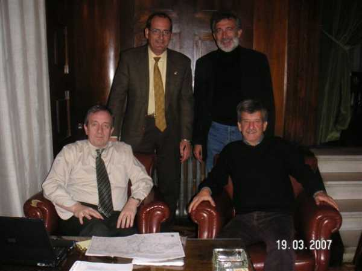

Los responsables de que la cosa en el "sitio" y para llegar al "sitio" quedara de lo más mejor, se reunieron en lugar secreto (pero muy aparente) para ultimar detalles de última hora, tales como ruta, paradas, lugares a visitar y cuevas donde dormir. Ellos son Carlos Bitaube y Jesús Barrallo (con problemas de almorranas al parecer), sentaditos y de pié, Joaquín lacaci y José Mª del Rey (que por cierto era su santo....) Jaime G. Merino, haciendo la foto y si pincháis en ella, lo veréis.
 |